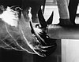

cavitation

Definition: Cavitation in fluid mechanics and engineering normally refers to the phenomenon in which the static pressure of a liquid reduces to below the liquid's vapour pressure, leading to the formation of small vapor-filled cavities in the liquid. When subjected to higher pressure, these cavities, called "bubbles" or "voids", collapse and can generate shock waves that may damage machinery. These shock waves are strong when they are very close to the imploded bubble, but rapidly weaken as they propagate away from the implosion. Cavitation is a significant cause of wear in some engineering contexts. Collapsing voids that implode near to a metal surface cause cyclic stress through repeated implosion. This results in surface fatigue of the metal, causing a type of wear also called "cavitation". The most common examples of this kind of wear are to pump impellers, and bends where a sudden change in the direction of liquid occurs. Cavitation is usually divided into two classes of behavior: inertial (or transient) cavitation and non-inertial cavitation.
Source: Wikipedia
Wikipedia Page (Something wrong with this association? Let us know.)
Wikidata Page (Something wrong with this association? Let us know.)